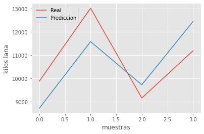

Contenido
import numpy as np
import pandas as pd
import seaborn as sb
import matplotlib.pyplot as plt
%matplotlib inline
from mpl_toolkits.mplot3d import Axes3D
from matplotlib import cm
plt.rcParams['figure.figsize'] = (16, 9)
plt.style.use('ggplot')
from sklearn import linear_model
from sklearn.metrics import mean_squared_error, r2_score
---------------------------------------------------------------------------
ModuleNotFoundError Traceback (most recent call last)
Input In [1], in <cell line: 3>()
1 import numpy as np
2 import pandas as pd
----> 3 import seaborn as sb
4 import matplotlib.pyplot as plt
5 get_ipython().run_line_magic('matplotlib', 'inline')
ModuleNotFoundError: No module named 'seaborn'
df_produccion = pd.read_csv('datos_produccion_anual_35.csv')
df_produccion = df_produccion[['fecha','esquila','kilos_lana']]
df_produccion.fecha = pd.to_datetime(df_produccion.fecha)
df_produccion['año'] = df_produccion.fecha.dt.year
df_produccion = df_produccion[['año', 'esquila', 'kilos_lana']]
La sonda 10 tiene los datos climaticos del Dique, que es lo mas cercano a los campos del productor de los datos de esquila.
df_clima = pd.read_csv('info_climatica_10.csv')
df_clima.rename(columns={'temperatura_maxima':'t_min',
'temperatura_media':'t_max',
'temperatura_minima':'t_med'},inplace=True)
df_clima = df_clima[['periodo','mm_lluvia']]
df_clima.periodo = pd.to_datetime(df_clima.periodo)
#Me quedo con los meses Enero, Febrero y Marzo de cada año para luego sumar los mm
#de lluvia acumulados en esos meses y agrupar por año.
df_clima = df_clima[df_clima.periodo.dt.month.isin([1,2,3])]
df_clima['año'] = df_clima.periodo.dt.year
df_clima=df_clima[['año','mm_lluvia']]
#El año 2008 para este dataset de clima (sonda=10) no tiene datos por eso lo quito.
df_clima = df_clima[~df_clima.año.isin([2008])]
c = df_clima.groupby('año')['mm_lluvia'].sum().reset_index()
resul = pd.merge(c, df_produccion, left_on='año',right_on='año', how='inner')
resul
| año | mm_lluvia | esquila | kilos_lana | |
|---|---|---|---|---|
| 0 | 2010 | 67.4 | 2221 | 9164 |
| 1 | 2011 | 27.8 | 1651 | 6516 |
| 2 | 2012 | 72.6 | 1708 | 8376 |
| 3 | 2013 | 57.6 | 1976 | 9892 |
| 4 | 2014 | 14.0 | 2788 | 10510 |
| 5 | 2015 | 25.0 | 2738 | 10776 |
| 6 | 2016 | 27.6 | 3289 | 10990 |
| 7 | 2017 | 39.0 | 3484 | 11200 |
| 8 | 2018 | 6.6 | 2963 | 9193 |
| 9 | 2019 | 8.0 | 3520 | 13027 |
Variables independientes:
mm de lluvia acumulados en Enero, Febrero y marzo de cada año
Cantidad de animales esquilados
Variables dependientes:
Kilos de Lana producidos
X_multiple = resul[['mm_lluvia','esquila']]
y_multiple = resul[['kilos_lana']]
from sklearn.model_selection import train_test_split
#Separo los datos de "train" en entrenamiento y prueba para probar los algoritmos
X_train, X_test, y_train, y_test = train_test_split(X_multiple, y_multiple, test_size=0.4)
lr_multiple = linear_model.LinearRegression()
lr_multiple.fit(X_train, y_train)
#lr_multiple.fit(X_multiple, y_multiple)
LinearRegression()
Y_pred_multiple = lr_multiple.predict(X_test)
print('Precisión del modelo:')
print(str(round(lr_multiple.score(X_train, y_train),4))+'%')
Precisión del modelo:
0.8352%
plt.plot(range(len(y_test)),y_test,label="Real")
plt.plot(range(len(Y_pred_multiple)),Y_pred_multiple,label="Prediccion")
#Mostrar imagen
plt.xlabel('muestras')
# Set the y axis label of the current axis.
plt.ylabel('kilos lana')
# Set a title of the current axe
# show a legend on the plot
plt.legend()
# Display a figure.
plt.show()
